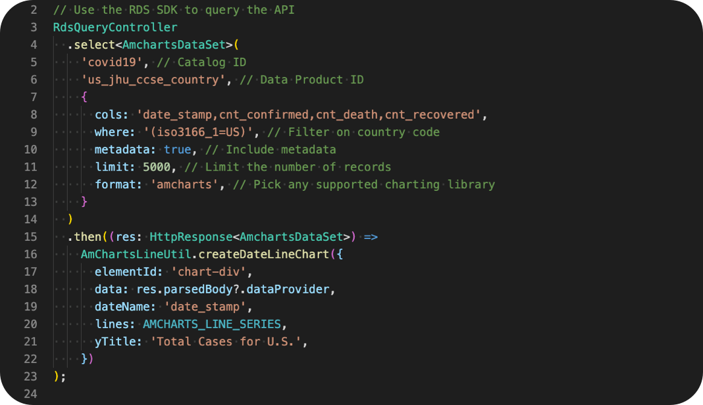

Total cases confirmed, recovered, and deaths
The data we are using for this visualization has already been aggregated to indicate the total counts per day.
- check_circleA single RDS API query
- check_circleNo more parsing various data files
- check_circleNo need to keep up with the data each time it changes
- check_circleSwitching charting libraries is as simple as changing one paramter
Try a different charting library, it's easy!
Chart Type